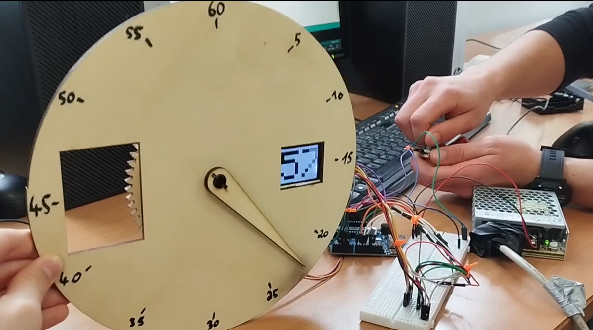
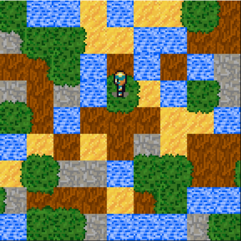
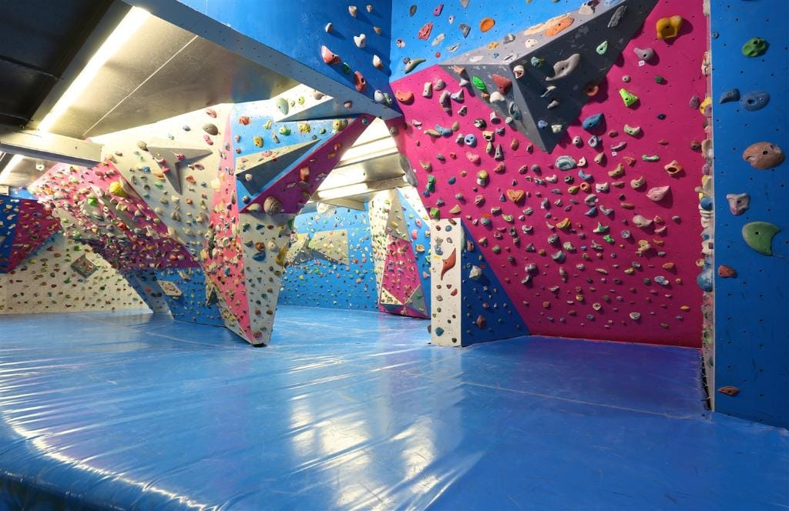
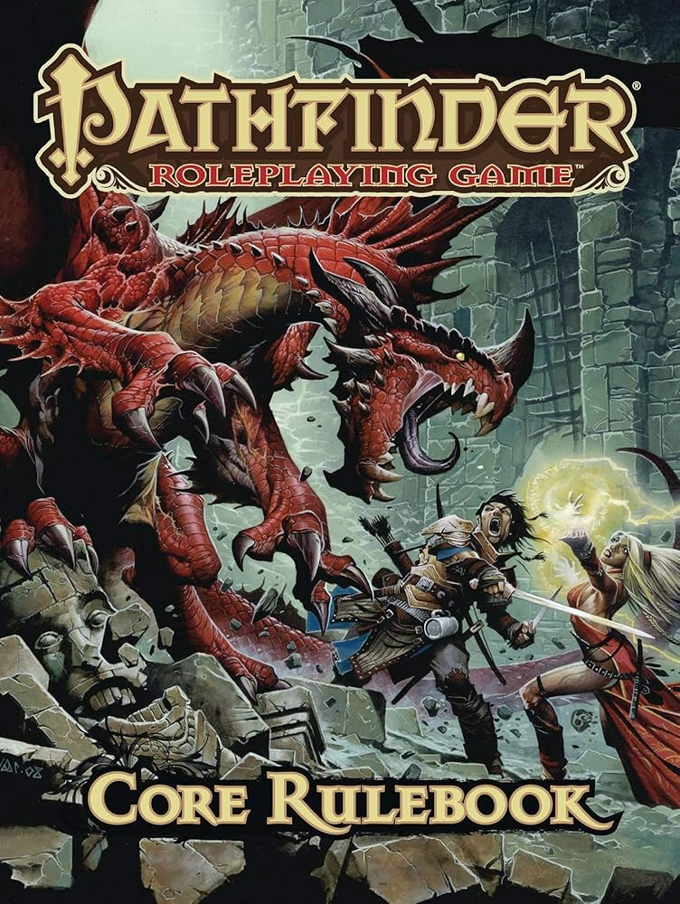

Présentation
Je m’appelle Aurel Bigot, je suis né le 19 février 2007. Je fais actuellement un BUT informatique à valeur de prépa intégrée pour l’école d’ingénieur Polytech. J’aimerais obtenir un diplôme d’ingénieur informatique dans la poursuite de mes études. J’ai pour passion l’escalade que je pratique régulièrement depuis plusieurs années. J’aime aussi lire des romans dans mon temps libre ainsi que jouer aux jeux vidéo et faire des jeux de rôle.
Curriculum Vitae
Lettre de motivation
35 avenue Jean-François Raclet
69007 Lyon
aurelbigot19@gmail.com
0767356035
Madame, monsieur
Étudiant en première année de BUT informatique, je suis à la recherche d’un stage pour la fin de l’année scolaire dans la période du _______ .
Après avoir discuté avec plusieurs autres étudiants de BUT informatique et d’école d’ingénieur, j’ai appris que votre entreprise prenait des étudiants en stage. Tous mes interlocuteurs m’ont fait part d’une culture d’entreprise très accueillante avec un stage valorisant et instructif. J’ai appris à la suite de recherches que votre entreprise cherchait des stagiaires et j’en ai conclu qu’un stage dans votre entreprise semblait parfait.
Je n’ai pas encore eu l’occasion de faire un stage dans le cadre des études supérieures mais je suis très intéressé. J’ai fait, il y a deux ans, un stage en université avec un technicien pour pouvoir découvrir le métier de technicien et le milieu universitaire à la fois. Je n’ai fréquenté le milieu de l’entreprise que pour mon stage de 3ème mais n’étant pas encore sûr de mon orientation, je n’ai pas pu en profiter. C’est donc pour cela que je cherche un stage dans le cadre de mon BUT informatique pour pouvoir découvrir le milieu professionnel.
Je recherche donc un stage qui va m’offrir la possibilité d’utiliser les compétences que j’ai pu développer lors de ma première année de BUT informatique et un stage qui me permet d’être au contact de professionnels du milieu.
Vous remerciant de l’attention portée à ma demande, je me tiens à votre disposition pour un entretien.
Aurel Bigot
Parcours scolaire et projet scolaire
-

STI2D :
1ère année d'informatique :
intitulé du projet : horloge digitale et mécanique
objectif : faire une horloge digitale et mécanique en petit groupe
description : Le projet a été réalisé en groupe de 2 sur plusieurs semaines dans le cadre d'un projet scolaire. J'ai participé à la création de l'idée et du design. Ma partie a ensuite consisté à faire toute la partie hardware et software informatique.
 intitulé du projet : compléter un squelette de jeu
objectif : apporter au squelette d'un jeu différentes capacités
description : Le projet a été réalisé en groupe de 2 sur plusieurs semaines. Nous avions un squelette de jeu fourni et nous avons passé plusieurs semaines à le compléter. Nous avons fait différentes choses comme la génération aléatoire des terrains, des modifications à la caméra...
Mes expériences professionnelles
stage de 3ème
stage en université
J'ai fait mon stage dans l'entreprise SPI. J'ai eu la chance de pouvoir suivre un ingénieur pendant une semaine. J'ai donc pu assister à différentes réunions, revues de projets ... J'ai notamment pu aider un technicien dans la fabrication de matériel.
Dans le cadre de ma recherche pour l'orientation, j'ai suivi un technicien pendant deux semaines. J'ai découvert le milieu universitaire tout en découvrant le métier de technicien. J'ai assisté et aidé dans la maintenance de matériel pour les étudiants et l'installation de postes informatiques et d'automates. J'ai même pu assister à des étudiants soutenant leur thèse.
Mes passions et loisirs
-

-
L'escalade, une passion
La lecture, un loisir qui dure
-
Les jeux de rôle, un loisir apprécié
Les jeux vidéo, un nouveau loisir
Je fais de l'escalade depuis environ 7 ans. Mais le sport n'est devenu une passion qu'en 2021. Depuis plusieurs années, je fais entre 6h et 8h d'escalade par semaine. J'ai aussi pour objectif dans le futur d'aller en faire plus à l'extérieur, notamment sur le site de Fontainebleau.
Depuis très jeune, j'apprécie lire. Je lis beaucoup de romans de science-fiction et de fantasy. Dernièrement, une série de livres que j'ai particulièrement appréciée est "Le Problème à trois corps" de Liu Cixin.

Je joue à des jeux de rôle depuis environ 5 ans. J'y ai été introduit par mes frères. J'ai joué avec mes frères et des amis à de nombreuses campagnes dans différents systèmes comme "Donjons et Dragons", "Pathfinder" ou "Brigandine".
J'ai joué aux jeux vidéo par intermittence depuis plusieurs années. Le jeu vidéo n'est devenu une passion qu'en début d'année. J'ai acheté dans le cadre de mes études un ordinateur puissant. Cela, en plus de me permettre de mieux travailler, m'a permis de jouer à différents jeux sur ordinateur. Mes jeux préférés sont probablement "Red Dead Redemption 2", "Sea of Thieves" et "Valorant".
Contact
Email : aurelbigot19@gmail.com
Téléphone : 07 67 35 60 35
inspiré par wikipedia